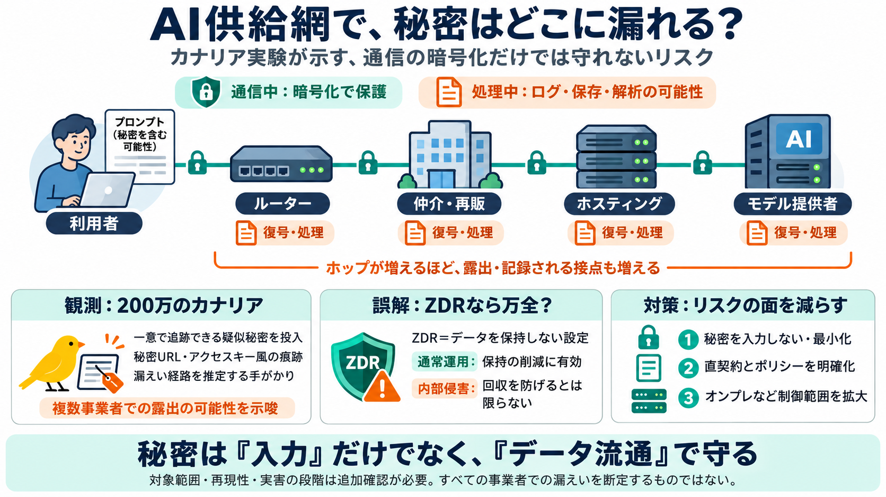

OpenRouter MiniMax Prompts Read: Why ZDR Labels Failed | The CyberSec Guru
The researcher behind the email is HD Moore, the creator of Metasploit and now chief research officer at Dragos. The Min…

AIを使うとき、プロンプト（命令文）は暗号化されても「複数事業者の内部で復号・処理される」ため、想定外に見られたり、記録されたりし得ます。
プロンプトは通信上の暗号化だけでは守りきれず、AIルーター/ゲートウェイ、仲介、再販、ホスティング、モデル提供側などの“ホップ”内で扱われます。
「カナリア」は、研究者が一意で追跡可能な“疑似秘密”を大量に混ぜ込み、どこでどう扱われたかを推定する考え方です（例：ユニークなURLやアクセスキーに似せた痕跡）。
HD Mooreらの研究として、AIサービスの巨大な連鎖（ルーター、再販、ホスティング、モデル提供者など）を経由するリクエストに、追跡可能な“2百万個”のカナリアを仕込んだと報じられています。
記事（および関連報告で強調される点）では、次の3方向が同時に問題化しています。
通信上の暗号化は“運搬中の秘匿”を守りますが、AI処理のために途中で復号され、内部でログ保存・解析・転送が行われ得ます。
「モデル提供者だけを見ればよい」という前提は危うくなります。仲介・再販・ホスティングが加わるほど、露出/記録/取り扱いの点数が増えるからです。
研究では「実際に使われたことのない」AWSアクセスキーや秘密URLなどを、プロンプトに1回だけ一意に入れることで、漏えい時に“どのリンクが原因か”を推定できる設計だと説明されています。
ZDR（Zero Data Retention）のような設定・フラグは、正しく運用されている前提では有効でも、攻撃者が内部にいる場合は抑止になりにくい、という示唆があります。
記事のトーンは慎重で、完全な防止は難しい前提のうえで、実務的にはオンプレホスティングや、上流事業者から直接の契約・プライバシーポリシーの明確化が推奨される方向です。
抜粋だけでは、対象範囲（どの事業者/期間/構成）、再現性、露出の“実害の段階”（閲覧・保存・外部送信・第三者利用など）を厳密に判断できません。
AI供給網は複数ホップで内部処理が起きるため、プロンプト内の秘密は漏れる可能性を前提に、投入を避ける・直契約で統制する・制御範囲を広げる、という現実的な対策が重要です。
The researcher behind the email is HD Moore, the creator of Metasploit and now chief research officer at Dragos. The Min…
Attackers used fake credentials planted in AI prompts at three different hosting providers, and none of the providers kn…
This is the customer-facing half of a story Dragos published two days earlier: HD Moore seeded roughly two million promp…
To test for potential leakage, researcher HD Moore assembled a collection of AWS access keys, functioning credentials ti…
OpenRouter has now removed the ZDR label from affected MiniMax endpoints and warned customers that their prompts and out…